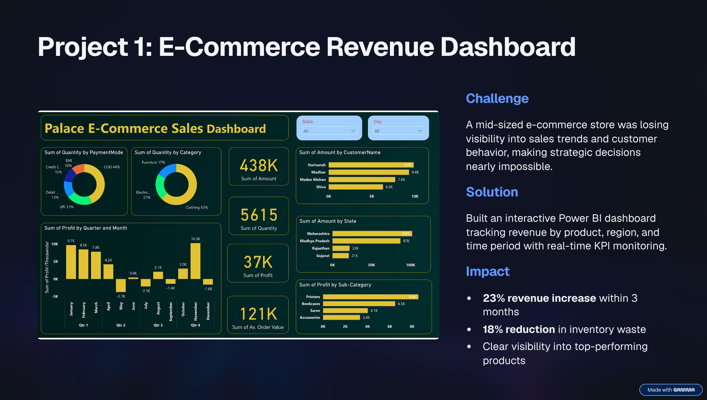
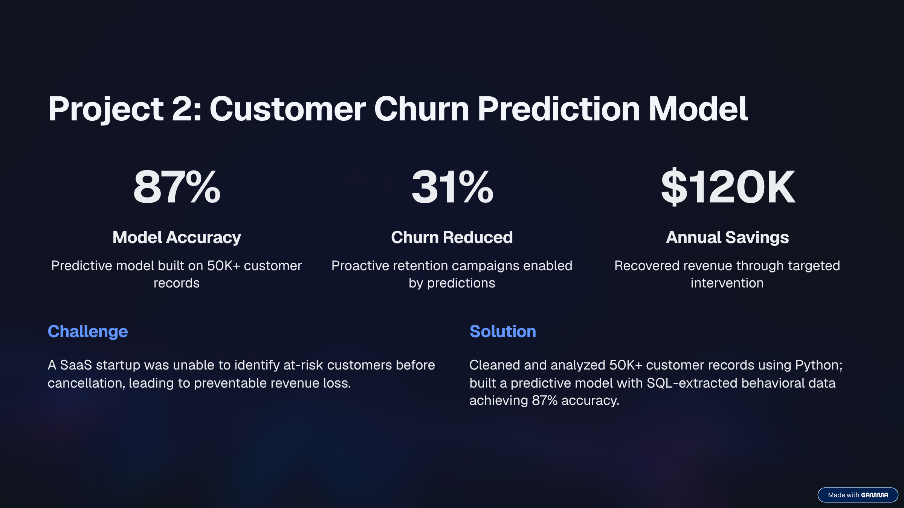
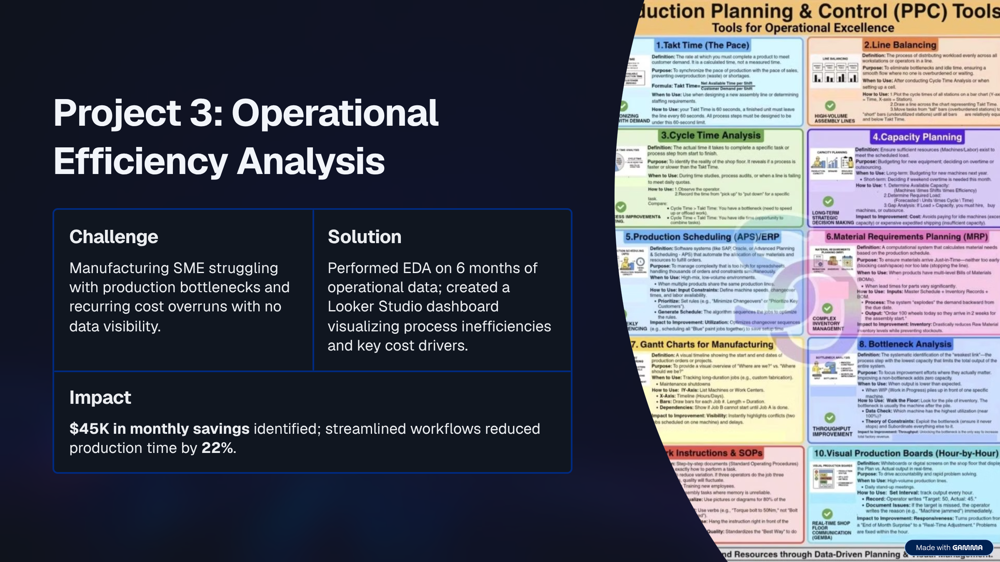

About Me
I'm a data analyst specializing in helping SME founders and e-commerce businesses unlock growth through data-driven decision-making. With expertise in end-to-end analytics—from data cleaning to interactive dashboards—I deliver clear, actionable insights that drive revenue and operational efficiency.
I've led competitive data science projects to 1st place and built dashboards that transformed complex metrics into strategic clarity for stakeholders.
Core Expertise
Analytics & Visualization
- Exploratory Data Analysis (EDA)
- Power BI Dashboards
- Excel Advanced Reporting
Data Engineering
- SQL Query Design
- Python Scripting
- Data Cleaning & Preparation
Strategic Skills
- Problem Solving
- Interactive Dashboard Creation
- Actionable Business Insights
Portfolio Projects
E-Commerce Revenue Dashboard
Challenge: Mid-sized e-commerce store losing visibility into sales trends.
Solution: Built an interactive Power BI dashboard tracking revenue by product and region.
Impact: 23% revenue increase within 3 months.

Customer Churn Prediction Model
Challenge: SaaS startup unable to identify at-risk customers before cancellation.
Solution: Cleaned 50K+ records with Python; built predictive model with SQL.
Impact: 87% Accuracy | $120K Savings.

Operational Efficiency Analysis
Challenge: Manufacturing SME struggling with production bottlenecks.
Solution: EDA on 6 months of data; created Looker Studio dashboard.
Impact: $45K monthly savings.

Certifications & Learning
Let's Work Together
Ready to turn your data into competitive advantage? Schedule a free 30-minute discovery call.